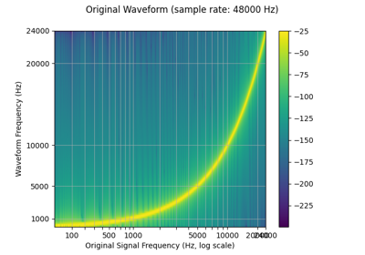

torchaudio.functional¶
Functions to perform common audio operations.
Utility¶
amplitude_to_DB¶
-
torchaudio.functional.amplitude_to_DB(x: torch.Tensor, multiplier: float, amin: float, db_multiplier: float, top_db: Optional[float] = None) → torch.Tensor[source]¶ Turn a spectrogram from the power/amplitude scale to the decibel scale.


The output of each tensor in a batch depends on the maximum value of that tensor, and so may return different values for an audio clip split into snippets vs. a full clip.
- Parameters
x (Tensor) – Input spectrogram(s) before being converted to decibel scale. Input should take the form (…, freq, time). Batched inputs should include a channel dimension and have the form (batch, channel, freq, time).
multiplier (float) – Use 10. for power and 20. for amplitude
amin (float) – Number to clamp
xdb_multiplier (float) – Log10(max(reference value and amin))
top_db (float or None, optional) – Minimum negative cut-off in decibels. A reasonable number is 80. (Default:
None)
- Returns
Output tensor in decibel scale
- Return type
Tensor
DB_to_amplitude¶
-
torchaudio.functional.DB_to_amplitude(x: torch.Tensor, ref: float, power: float) → torch.Tensor[source]¶ Turn a tensor from the decibel scale to the power/amplitude scale.
- Parameters
- Returns
Output tensor in power/amplitude scale.
- Return type
Tensor
melscale_fbanks¶
-
torchaudio.functional.melscale_fbanks(n_freqs: int, f_min: float, f_max: float, n_mels: int, sample_rate: int, norm: Optional[str] = None, mel_scale: str = 'htk') → torch.Tensor[source]¶ Create a frequency bin conversion matrix.
Note
For the sake of the numerical compatibility with librosa, not all the coefficients in the resulting filter bank has magnitude of 1.

- Parameters
n_freqs (int) – Number of frequencies to highlight/apply
f_min (float) – Minimum frequency (Hz)
f_max (float) – Maximum frequency (Hz)
n_mels (int) – Number of mel filterbanks
sample_rate (int) – Sample rate of the audio waveform
norm (str or None, optional) – If ‘slaney’, divide the triangular mel weights by the width of the mel band (area normalization). (Default:
None)mel_scale (str, optional) – Scale to use:
htkorslaney. (Default:htk)
- Returns
Triangular filter banks (fb matrix) of size (
n_freqs,n_mels) meaning number of frequencies to highlight/apply to x the number of filterbanks. Each column is a filterbank so that assuming there is a matrix A of size (…,n_freqs), the applied result would beA * melscale_fbanks(A.size(-1), ...).- Return type
Tensor
- Tutorials using
melscale_fbanks:

linear_fbanks¶
-
torchaudio.functional.linear_fbanks(n_freqs: int, f_min: float, f_max: float, n_filter: int, sample_rate: int) → torch.Tensor[source]¶ Creates a linear triangular filterbank.
Note
For the sake of the numerical compatibility with librosa, not all the coefficients in the resulting filter bank has magnitude of 1.

- Parameters
- Returns
Triangular filter banks (fb matrix) of size (
n_freqs,n_filter) meaning number of frequencies to highlight/apply to x the number of filterbanks. Each column is a filterbank so that assuming there is a matrix A of size (…,n_freqs), the applied result would beA * linear_fbanks(A.size(-1), ...).- Return type
Tensor
create_dct¶
mask_along_axis¶
-
torchaudio.functional.mask_along_axis(specgram: torch.Tensor, mask_param: int, mask_value: float, axis: int, p: float = 1.0) → torch.Tensor[source]¶ Apply a mask along
axis.
Mask will be applied from indices
[v_0, v_0 + v), wherevis sampled fromuniform(0, max_v)andv_0fromuniform(0, specgrams.size(axis) - v), withmax_v = mask_paramwhenp = 1.0andmax_v = min(mask_param, floor(specgrams.size(axis) * p))otherwise. All examples will have the same mask interval.- Parameters
specgram (Tensor) – Real spectrogram (channel, freq, time)
mask_param (int) – Number of columns to be masked will be uniformly sampled from [0, mask_param]
mask_value (float) – Value to assign to the masked columns
axis (int) – Axis to apply masking on (1 -> frequency, 2 -> time)
p (float, optional) – maximum proportion of columns that can be masked. (Default: 1.0)
- Returns
Masked spectrogram of dimensions (channel, freq, time)
- Return type
Tensor
mask_along_axis_iid¶
-
torchaudio.functional.mask_along_axis_iid(specgrams: torch.Tensor, mask_param: int, mask_value: float, axis: int, p: float = 1.0) → torch.Tensor[source]¶ Apply a mask along
axis.
Mask will be applied from indices
[v_0, v_0 + v), wherevis sampled fromuniform(0, max_v)andv_0fromuniform(0, specgrams.size(axis) - v), withmax_v = mask_paramwhenp = 1.0andmax_v = min(mask_param, floor(specgrams.size(axis) * p))otherwise.- Parameters
specgrams (Tensor) – Real spectrograms (batch, channel, freq, time)
mask_param (int) – Number of columns to be masked will be uniformly sampled from [0, mask_param]
mask_value (float) – Value to assign to the masked columns
axis (int) – Axis to apply masking on (2 -> frequency, 3 -> time)
p (float, optional) – maximum proportion of columns that can be masked. (Default: 1.0)
- Returns
Masked spectrograms of dimensions (batch, channel, freq, time)
- Return type
Tensor
mu_law_encoding¶
-
torchaudio.functional.mu_law_encoding(x: torch.Tensor, quantization_channels: int) → torch.Tensor[source]¶ Encode signal based on mu-law companding.
For more info see the Wikipedia Entry
This algorithm expects the signal has been scaled to between -1 and 1 and returns a signal encoded with values from 0 to quantization_channels - 1.
- Parameters
x (Tensor) – Input tensor
quantization_channels (int) – Number of channels
- Returns
Input after mu-law encoding
- Return type
Tensor
mu_law_decoding¶
-
torchaudio.functional.mu_law_decoding(x_mu: torch.Tensor, quantization_channels: int) → torch.Tensor[source]¶ Decode mu-law encoded signal.
For more info see the Wikipedia Entry
This expects an input with values between 0 and quantization_channels - 1 and returns a signal scaled between -1 and 1.
- Parameters
x_mu (Tensor) – Input tensor
quantization_channels (int) – Number of channels
- Returns
Input after mu-law decoding
- Return type
Tensor
apply_codec¶
-
torchaudio.functional.apply_codec(waveform: torch.Tensor, sample_rate: int, format: str, channels_first: bool = True, compression: Optional[float] = None, encoding: Optional[str] = None, bits_per_sample: Optional[int] = None) → torch.Tensor[source]¶ Apply codecs as a form of augmentation.
- Parameters
waveform (Tensor) – Audio data. Must be 2 dimensional. See also
`channels_first`.sample_rate (int) – Sample rate of the audio waveform.
format (str) – File format.
channels_first (bool, optional) – When True, both the input and output Tensor have dimension (channel, time). Otherwise, they have dimension (time, channel).
compression (float or None, optional) – Used for formats other than WAV. For more details see
torchaudio.backend.sox_io_backend.save().encoding (str or None, optional) – Changes the encoding for the supported formats. For more details see
torchaudio.backend.sox_io_backend.save().bits_per_sample (int or None, optional) – Changes the bit depth for the supported formats. For more details see
torchaudio.backend.sox_io_backend.save().
- Returns
Resulting Tensor. If
channels_first=True, it has (channel, time) else (time, channel).- Return type
Tensor
- Tutorials using
apply_codec: - Audio Data Augmentation
resample¶
-
torchaudio.functional.resample(waveform: torch.Tensor, orig_freq: int, new_freq: int, lowpass_filter_width: int = 6, rolloff: float = 0.99, resampling_method: str = 'sinc_interpolation', beta: Optional[float] = None) → torch.Tensor[source]¶ Resamples the waveform at the new frequency using bandlimited interpolation. [1].
Note
transforms.Resampleprecomputes and reuses the resampling kernel, so using it will result in more efficient computation if resampling multiple waveforms with the same resampling parameters.- Parameters
waveform (Tensor) – The input signal of dimension (…, time)
orig_freq (int) – The original frequency of the signal
new_freq (int) – The desired frequency
lowpass_filter_width (int, optional) – Controls the sharpness of the filter, more == sharper but less efficient. (Default:
6)rolloff (float, optional) – The roll-off frequency of the filter, as a fraction of the Nyquist. Lower values reduce anti-aliasing, but also reduce some of the highest frequencies. (Default:
0.99)resampling_method (str, optional) – The resampling method to use. Options: [
sinc_interpolation,kaiser_window] (Default:'sinc_interpolation')beta (float or None, optional) – The shape parameter used for kaiser window.
- Returns
The waveform at the new frequency of dimension (…, time).
- Return type
Tensor
- Tutorials using
resample: Speech Recognition with Wav2Vec2
Speech Recognition with Wav2Vec2Audio Resampling

Filtering¶
allpass_biquad¶
-
torchaudio.functional.allpass_biquad(waveform: torch.Tensor, sample_rate: int, central_freq: float, Q: float = 0.707) → torch.Tensor[source]¶ Design two-pole all-pass filter. Similar to SoX implementation.
- Parameters
waveform (torch.Tensor) – audio waveform of dimension of (…, time)
sample_rate (int) – sampling rate of the waveform, e.g. 44100 (Hz)
central_freq (float or torch.Tensor) – central frequency (in Hz)
Q (float or torch.Tensor, optional) – https://en.wikipedia.org/wiki/Q_factor (Default:
0.707)
- Returns
Waveform of dimension of (…, time)
- Return type
Tensor
band_biquad¶
-
torchaudio.functional.band_biquad(waveform: torch.Tensor, sample_rate: int, central_freq: float, Q: float = 0.707, noise: bool = False) → torch.Tensor[source]¶ Design two-pole band filter. Similar to SoX implementation.
- Parameters
waveform (Tensor) – audio waveform of dimension of (…, time)
sample_rate (int) – sampling rate of the waveform, e.g. 44100 (Hz)
central_freq (float or torch.Tensor) – central frequency (in Hz)
Q (float or torch.Tensor, optional) – https://en.wikipedia.org/wiki/Q_factor (Default:
0.707).noise (bool, optional) – If
True, uses the alternate mode for un-pitched audio (e.g. percussion). IfFalse, uses mode oriented to pitched audio, i.e. voice, singing, or instrumental music (Default:False).
- Returns
Waveform of dimension of (…, time)
- Return type
Tensor
bandpass_biquad¶
-
torchaudio.functional.bandpass_biquad(waveform: torch.Tensor, sample_rate: int, central_freq: float, Q: float = 0.707, const_skirt_gain: bool = False) → torch.Tensor[source]¶ Design two-pole band-pass filter. Similar to SoX implementation.
- Parameters
waveform (Tensor) – audio waveform of dimension of (…, time)
sample_rate (int) – sampling rate of the waveform, e.g. 44100 (Hz)
central_freq (float or torch.Tensor) – central frequency (in Hz)
Q (float or torch.Tensor, optional) – https://en.wikipedia.org/wiki/Q_factor (Default:
0.707)const_skirt_gain (bool, optional) – If
True, uses a constant skirt gain (peak gain = Q). IfFalse, uses a constant 0dB peak gain. (Default:False)
- Returns
Waveform of dimension of (…, time)
- Return type
Tensor
bandreject_biquad¶
-
torchaudio.functional.bandreject_biquad(waveform: torch.Tensor, sample_rate: int, central_freq: float, Q: float = 0.707) → torch.Tensor[source]¶ Design two-pole band-reject filter. Similar to SoX implementation.
- Parameters
waveform (Tensor) – audio waveform of dimension of (…, time)
sample_rate (int) – sampling rate of the waveform, e.g. 44100 (Hz)
central_freq (float or torch.Tensor) – central frequency (in Hz)
Q (float or torch.Tensor, optional) – https://en.wikipedia.org/wiki/Q_factor (Default:
0.707)
- Returns
Waveform of dimension of (…, time)
- Return type
Tensor
bass_biquad¶
-
torchaudio.functional.bass_biquad(waveform: torch.Tensor, sample_rate: int, gain: float, central_freq: float = 100, Q: float = 0.707) → torch.Tensor[source]¶ Design a bass tone-control effect. Similar to SoX implementation.
- Parameters
waveform (Tensor) – audio waveform of dimension of (…, time)
sample_rate (int) – sampling rate of the waveform, e.g. 44100 (Hz)
gain (float or torch.Tensor) – desired gain at the boost (or attenuation) in dB.
central_freq (float or torch.Tensor, optional) – central frequency (in Hz). (Default:
100)Q (float or torch.Tensor, optional) – https://en.wikipedia.org/wiki/Q_factor (Default:
0.707).
- Returns
Waveform of dimension of (…, time)
- Return type
Tensor
biquad¶
-
torchaudio.functional.biquad(waveform: torch.Tensor, b0: float, b1: float, b2: float, a0: float, a1: float, a2: float) → torch.Tensor[source]¶ Perform a biquad filter of input tensor. Initial conditions set to 0.
- Parameters
waveform (Tensor) – audio waveform of dimension of (…, time)
b0 (float or torch.Tensor) – numerator coefficient of current input, x[n]
b1 (float or torch.Tensor) – numerator coefficient of input one time step ago x[n-1]
b2 (float or torch.Tensor) – numerator coefficient of input two time steps ago x[n-2]
a0 (float or torch.Tensor) – denominator coefficient of current output y[n], typically 1
a1 (float or torch.Tensor) – denominator coefficient of current output y[n-1]
a2 (float or torch.Tensor) – denominator coefficient of current output y[n-2]
- Returns
Waveform with dimension of (…, time)
- Return type
Tensor
contrast¶
-
torchaudio.functional.contrast(waveform: torch.Tensor, enhancement_amount: float = 75.0) → torch.Tensor[source]¶ Apply contrast effect. Similar to SoX implementation.
Comparable with compression, this effect modifies an audio signal to make it sound louder
- Parameters
waveform (Tensor) – audio waveform of dimension of (…, time)
enhancement_amount (float, optional) – controls the amount of the enhancement Allowed range of values for enhancement_amount : 0-100 Note that enhancement_amount = 0 still gives a significant contrast enhancement
- Returns
Waveform of dimension of (…, time)
- Return type
Tensor
- Reference:
dcshift¶
-
torchaudio.functional.dcshift(waveform: torch.Tensor, shift: float, limiter_gain: Optional[float] = None) → torch.Tensor[source]¶ Apply a DC shift to the audio. Similar to SoX implementation.
This can be useful to remove a DC offset (caused perhaps by a hardware problem in the recording chain) from the audio
- Parameters
waveform (Tensor) – audio waveform of dimension of (…, time)
shift (float) – indicates the amount to shift the audio Allowed range of values for shift : -2.0 to +2.0
limiter_gain (float of None, optional) – It is used only on peaks to prevent clipping It should have a value much less than 1 (e.g. 0.05 or 0.02)
- Returns
Waveform of dimension of (…, time)
- Return type
Tensor
- Reference:
deemph_biquad¶
-
torchaudio.functional.deemph_biquad(waveform: torch.Tensor, sample_rate: int) → torch.Tensor[source]¶ Apply ISO 908 CD de-emphasis (shelving) IIR filter. Similar to SoX implementation.
- Parameters
waveform (Tensor) – audio waveform of dimension of (…, time)
sample_rate (int) – sampling rate of the waveform, Allowed sample rate
44100or48000
- Returns
Waveform of dimension of (…, time)
- Return type
Tensor
dither¶
-
torchaudio.functional.dither(waveform: torch.Tensor, density_function: str = 'TPDF', noise_shaping: bool = False) → torch.Tensor[source]¶ Apply dither
Dither increases the perceived dynamic range of audio stored at a particular bit-depth by eliminating nonlinear truncation distortion (i.e. adding minimally perceived noise to mask distortion caused by quantization).
- Parameters
waveform (Tensor) – Tensor of audio of dimension (…, time)
density_function (str, optional) – The density function of a continuous random variable. One of
"TPDF"(Triangular Probability Density Function),"RPDF"(Rectangular Probability Density Function) or"GPDF"(Gaussian Probability Density Function) (Default:"TPDF").noise_shaping (bool, optional) – a filtering process that shapes the spectral energy of quantisation error (Default:
False)
- Returns
waveform dithered
- Return type
Tensor
equalizer_biquad¶
-
torchaudio.functional.equalizer_biquad(waveform: torch.Tensor, sample_rate: int, center_freq: float, gain: float, Q: float = 0.707) → torch.Tensor[source]¶ Design biquad peaking equalizer filter and perform filtering. Similar to SoX implementation.
- Parameters
waveform (Tensor) – audio waveform of dimension of (…, time)
sample_rate (int) – sampling rate of the waveform, e.g. 44100 (Hz)
center_freq (float) – filter’s central frequency
gain (float or torch.Tensor) – desired gain at the boost (or attenuation) in dB
Q (float or torch.Tensor, optional) – https://en.wikipedia.org/wiki/Q_factor (Default:
0.707)
- Returns
Waveform of dimension of (…, time)
- Return type
Tensor
filtfilt¶
-
torchaudio.functional.filtfilt(waveform: torch.Tensor, a_coeffs: torch.Tensor, b_coeffs: torch.Tensor, clamp: bool = True) → torch.Tensor[source]¶ Apply an IIR filter forward and backward to a waveform.
Inspired by https://docs.scipy.org/doc/scipy/reference/generated/scipy.signal.filtfilt.html
- Parameters
waveform (Tensor) – audio waveform of dimension of (…, time). Must be normalized to -1 to 1.
a_coeffs (Tensor) – denominator coefficients of difference equation of dimension of either 1D with shape (num_order + 1) or 2D with shape (num_filters, num_order + 1). Lower delay coefficients are first, e.g.
[a0, a1, a2, ...]. Must be same size as b_coeffs (pad with 0’s as necessary).b_coeffs (Tensor) – numerator coefficients of difference equation of dimension of either 1D with shape (num_order + 1) or 2D with shape (num_filters, num_order + 1). Lower delay coefficients are first, e.g.
[b0, b1, b2, ...]. Must be same size as a_coeffs (pad with 0’s as necessary).clamp (bool, optional) – If
True, clamp the output signal to be in the range [-1, 1] (Default:True)
- Returns
Waveform with dimension of either (…, num_filters, time) if
a_coeffsandb_coeffsare 2D Tensors, or (…, time) otherwise.- Return type
Tensor
flanger¶
-
torchaudio.functional.flanger(waveform: torch.Tensor, sample_rate: int, delay: float = 0.0, depth: float = 2.0, regen: float = 0.0, width: float = 71.0, speed: float = 0.5, phase: float = 25.0, modulation: str = 'sinusoidal', interpolation: str = 'linear') → torch.Tensor[source]¶ Apply a flanger effect to the audio. Similar to SoX implementation.
- Parameters
waveform (Tensor) – audio waveform of dimension of (…, channel, time) . Max 4 channels allowed
sample_rate (int) – sampling rate of the waveform, e.g. 44100 (Hz)
delay (float, optional) – desired delay in milliseconds(ms) Allowed range of values are 0 to 30
depth (float, optional) – desired delay depth in milliseconds(ms) Allowed range of values are 0 to 10
regen (float, optional) – desired regen(feedback gain) in dB Allowed range of values are -95 to 95
width (float, optional) – desired width(delay gain) in dB Allowed range of values are 0 to 100
speed (float, optional) – modulation speed in Hz Allowed range of values are 0.1 to 10
phase (float, optional) – percentage phase-shift for multi-channel Allowed range of values are 0 to 100
modulation (str, optional) – Use either “sinusoidal” or “triangular” modulation. (Default:
sinusoidal)interpolation (str, optional) – Use either “linear” or “quadratic” for delay-line interpolation. (Default:
linear)
- Returns
Waveform of dimension of (…, channel, time)
- Return type
Tensor
- Reference:
Scott Lehman, Effects Explained,
gain¶
-
torchaudio.functional.gain(waveform: torch.Tensor, gain_db: float = 1.0) → torch.Tensor[source]¶ Apply amplification or attenuation to the whole waveform.
- Parameters
waveform (Tensor) – Tensor of audio of dimension (…, time).
gain_db (float, optional) Gain adjustment in decibels (dB) –
1.0).
- Returns
the whole waveform amplified by gain_db.
- Return type
Tensor
highpass_biquad¶
-
torchaudio.functional.highpass_biquad(waveform: torch.Tensor, sample_rate: int, cutoff_freq: float, Q: float = 0.707) → torch.Tensor[source]¶ Design biquad highpass filter and perform filtering. Similar to SoX implementation.
- Parameters
waveform (Tensor) – audio waveform of dimension of (…, time)
sample_rate (int) – sampling rate of the waveform, e.g. 44100 (Hz)
cutoff_freq (float or torch.Tensor) – filter cutoff frequency
Q (float or torch.Tensor, optional) – https://en.wikipedia.org/wiki/Q_factor (Default:
0.707)
- Returns
Waveform dimension of (…, time)
- Return type
Tensor
lfilter¶
-
torchaudio.functional.lfilter(waveform: torch.Tensor, a_coeffs: torch.Tensor, b_coeffs: torch.Tensor, clamp: bool = True, batching: bool = True) → torch.Tensor[source]¶ Perform an IIR filter by evaluating difference equation.
Note
To avoid numerical problems, small filter order is preferred. Using double precision could also minimize numerical precision errors.
- Parameters
waveform (Tensor) – audio waveform of dimension of (…, time). Must be normalized to -1 to 1.
a_coeffs (Tensor) – denominator coefficients of difference equation of dimension of either 1D with shape (num_order + 1) or 2D with shape (num_filters, num_order + 1). Lower delays coefficients are first, e.g.
[a0, a1, a2, ...]. Must be same size as b_coeffs (pad with 0’s as necessary).b_coeffs (Tensor) – numerator coefficients of difference equation of dimension of either 1D with shape (num_order + 1) or 2D with shape (num_filters, num_order + 1). Lower delays coefficients are first, e.g.
[b0, b1, b2, ...]. Must be same size as a_coeffs (pad with 0’s as necessary).clamp (bool, optional) – If
True, clamp the output signal to be in the range [-1, 1] (Default:True)batching (bool, optional) – Effective only when coefficients are 2D. If
True, then waveform should be at least 2D, and the size of second axis from last should equals tonum_filters. The output can be expressed asoutput[..., i, :] = lfilter(waveform[..., i, :], a_coeffs[i], b_coeffs[i], clamp=clamp, batching=False). (Default:True)
- Returns
Waveform with dimension of either (…, num_filters, time) if
a_coeffsandb_coeffsare 2D Tensors, or (…, time) otherwise.- Return type
Tensor
lowpass_biquad¶
-
torchaudio.functional.lowpass_biquad(waveform: torch.Tensor, sample_rate: int, cutoff_freq: float, Q: float = 0.707) → torch.Tensor[source]¶ Design biquad lowpass filter and perform filtering. Similar to SoX implementation.
- Parameters
waveform (torch.Tensor) – audio waveform of dimension of (…, time)
sample_rate (int) – sampling rate of the waveform, e.g. 44100 (Hz)
cutoff_freq (float or torch.Tensor) – filter cutoff frequency
Q (float or torch.Tensor, optional) – https://en.wikipedia.org/wiki/Q_factor (Default:
0.707)
- Returns
Waveform of dimension of (…, time)
- Return type
Tensor
overdrive¶
-
torchaudio.functional.overdrive(waveform: torch.Tensor, gain: float = 20, colour: float = 20) → torch.Tensor[source]¶ Apply a overdrive effect to the audio. Similar to SoX implementation.
This effect applies a non linear distortion to the audio signal.
- Parameters
waveform (Tensor) – audio waveform of dimension of (…, time)
gain (float, optional) – desired gain at the boost (or attenuation) in dB Allowed range of values are 0 to 100
colour (float, optional) – controls the amount of even harmonic content in the over-driven output Allowed range of values are 0 to 100
- Returns
Waveform of dimension of (…, time)
- Return type
Tensor
- Reference:
phaser¶
-
torchaudio.functional.phaser(waveform: torch.Tensor, sample_rate: int, gain_in: float = 0.4, gain_out: float = 0.74, delay_ms: float = 3.0, decay: float = 0.4, mod_speed: float = 0.5, sinusoidal: bool = True) → torch.Tensor[source]¶ Apply a phasing effect to the audio. Similar to SoX implementation.
- Parameters
waveform (Tensor) – audio waveform of dimension of (…, time)
sample_rate (int) – sampling rate of the waveform, e.g. 44100 (Hz)
gain_in (float, optional) – desired input gain at the boost (or attenuation) in dB Allowed range of values are 0 to 1
gain_out (float, optional) – desired output gain at the boost (or attenuation) in dB Allowed range of values are 0 to 1e9
delay_ms (float, optional) – desired delay in milliseconds Allowed range of values are 0 to 5.0
decay (float, optional) – desired decay relative to gain-in Allowed range of values are 0 to 0.99
mod_speed (float, optional) – modulation speed in Hz Allowed range of values are 0.1 to 2
sinusoidal (bool, optional) – If
True, uses sinusoidal modulation (preferable for multiple instruments) IfFalse, uses triangular modulation (gives single instruments a sharper phasing effect) (Default:True)
- Returns
Waveform of dimension of (…, time)
- Return type
Tensor
- Reference:
Scott Lehman, Effects Explained.
riaa_biquad¶
-
torchaudio.functional.riaa_biquad(waveform: torch.Tensor, sample_rate: int) → torch.Tensor[source]¶ Apply RIAA vinyl playback equalization. Similar to SoX implementation.
- Parameters
waveform (Tensor) – audio waveform of dimension of (…, time)
sample_rate (int) – sampling rate of the waveform, e.g. 44100 (Hz). Allowed sample rates in Hz :
44100,``48000``,``88200``,``96000``
- Returns
Waveform of dimension of (…, time)
- Return type
Tensor
treble_biquad¶
-
torchaudio.functional.treble_biquad(waveform: torch.Tensor, sample_rate: int, gain: float, central_freq: float = 3000, Q: float = 0.707) → torch.Tensor[source]¶ Design a treble tone-control effect. Similar to SoX implementation.
- Parameters
waveform (Tensor) – audio waveform of dimension of (…, time)
sample_rate (int) – sampling rate of the waveform, e.g. 44100 (Hz)
gain (float or torch.Tensor) – desired gain at the boost (or attenuation) in dB.
central_freq (float or torch.Tensor, optional) – central frequency (in Hz). (Default:
3000)Q (float or torch.Tensor, optional) – https://en.wikipedia.org/wiki/Q_factor (Default:
0.707).
- Returns
Waveform of dimension of (…, time)
- Return type
Tensor
Feature Extractions¶
vad¶
-
torchaudio.functional.vad(waveform: torch.Tensor, sample_rate: int, trigger_level: float = 7.0, trigger_time: float = 0.25, search_time: float = 1.0, allowed_gap: float = 0.25, pre_trigger_time: float = 0.0, boot_time: float = 0.35, noise_up_time: float = 0.1, noise_down_time: float = 0.01, noise_reduction_amount: float = 1.35, measure_freq: float = 20.0, measure_duration: Optional[float] = None, measure_smooth_time: float = 0.4, hp_filter_freq: float = 50.0, lp_filter_freq: float = 6000.0, hp_lifter_freq: float = 150.0, lp_lifter_freq: float = 2000.0) → torch.Tensor[source]¶ Voice Activity Detector. Similar to SoX implementation.
Attempts to trim silence and quiet background sounds from the ends of recordings of speech. The algorithm currently uses a simple cepstral power measurement to detect voice, so may be fooled by other things, especially music.
The effect can trim only from the front of the audio, so in order to trim from the back, the reverse effect must also be used.
- Parameters
waveform (Tensor) – Tensor of audio of dimension (channels, time) or (time) Tensor of shape (channels, time) is treated as a multi-channel recording of the same event and the resulting output will be trimmed to the earliest voice activity in any channel.
sample_rate (int) – Sample rate of audio signal.
trigger_level (float, optional) – The measurement level used to trigger activity detection. This may need to be cahnged depending on the noise level, signal level, and other characteristics of the input audio. (Default: 7.0)
trigger_time (float, optional) – The time constant (in seconds) used to help ignore short bursts of sound. (Default: 0.25)
search_time (float, optional) – The amount of audio (in seconds) to search for quieter/shorter bursts of audio to include prior to the detected trigger point. (Default: 1.0)
allowed_gap (float, optional) – The allowed gap (in seconds) between quieter/shorter bursts of audio to include prior to the detected trigger point. (Default: 0.25)
pre_trigger_time (float, optional) – The amount of audio (in seconds) to preserve before the trigger point and any found quieter/shorter bursts. (Default: 0.0)
boot_time (float, optional) The algorithm (internally) – estimation/reduction in order to detect the start of the wanted audio. This option sets the time for the initial noise estimate. (Default: 0.35)
noise_up_time (float, optional) – for when the noise level is increasing. (Default: 0.1)
noise_down_time (float, optional) – for when the noise level is decreasing. (Default: 0.01)
noise_reduction_amount (float, optional) – the detection algorithm (e.g. 0, 0.5, …). (Default: 1.35)
measure_freq (float, optional) – processing/measurements. (Default: 20.0)
measure_duration – (float, optional) Measurement duration. (Default: Twice the measurement period; i.e. with overlap.)
measure_smooth_time (float, optional) – spectral measurements. (Default: 0.4)
hp_filter_freq (float, optional) – at the input to the detector algorithm. (Default: 50.0)
lp_filter_freq (float, optional) – at the input to the detector algorithm. (Default: 6000.0)
hp_lifter_freq (float, optional) – in the detector algorithm. (Default: 150.0)
lp_lifter_freq (float, optional) – in the detector algorithm. (Default: 2000.0)
- Returns
Tensor of audio of dimension (…, time).
- Return type
Tensor
- Reference:
spectrogram¶
-
torchaudio.functional.spectrogram(waveform: torch.Tensor, pad: int, window: torch.Tensor, n_fft: int, hop_length: int, win_length: int, power: Optional[float], normalized: bool, center: bool = True, pad_mode: str = 'reflect', onesided: bool = True, return_complex: Optional[bool] = None) → torch.Tensor[source]¶ Create a spectrogram or a batch of spectrograms from a raw audio signal. The spectrogram can be either magnitude-only or complex.
- Parameters
waveform (Tensor) – Tensor of audio of dimension (…, time)
pad (int) – Two sided padding of signal
window (Tensor) – Window tensor that is applied/multiplied to each frame/window
n_fft (int) – Size of FFT
hop_length (int) – Length of hop between STFT windows
win_length (int) – Window size
power (float or None) – Exponent for the magnitude spectrogram, (must be > 0) e.g., 1 for energy, 2 for power, etc. If None, then the complex spectrum is returned instead.
normalized (bool) – Whether to normalize by magnitude after stft
center (bool, optional) – whether to pad
waveformon both sides so that the \(t\)-th frame is centered at time \(t \times \text{hop\_length}\). Default:Truepad_mode (string, optional) – controls the padding method used when
centerisTrue. Default:"reflect"onesided (bool, optional) – controls whether to return half of results to avoid redundancy. Default:
Truereturn_complex (bool, optional) – Deprecated and not used.
- Returns
Dimension (…, freq, time), freq is
n_fft // 2 + 1andn_fftis the number of Fourier bins, and time is the number of window hops (n_frame).- Return type
Tensor
inverse_spectrogram¶
-
torchaudio.functional.inverse_spectrogram(spectrogram: torch.Tensor, length: Optional[int], pad: int, window: torch.Tensor, n_fft: int, hop_length: int, win_length: int, normalized: bool, center: bool = True, pad_mode: str = 'reflect', onesided: bool = True) → torch.Tensor[source]¶ Create an inverse spectrogram or a batch of inverse spectrograms from the provided complex-valued spectrogram.
- Parameters
spectrogram (Tensor) – Complex tensor of audio of dimension (…, freq, time).
pad (int) – Two sided padding of signal. It is only effective when
lengthis provided.window (Tensor) – Window tensor that is applied/multiplied to each frame/window
n_fft (int) – Size of FFT
hop_length (int) – Length of hop between STFT windows
win_length (int) – Window size
normalized (bool) – Whether the stft output was normalized by magnitude
center (bool, optional) – whether the waveform was padded on both sides so that the \(t\)-th frame is centered at time \(t \times \text{hop\_length}\). Default:
Truepad_mode (string, optional) – controls the padding method used when
centerisTrue. This parameter is provided for compatibility with the spectrogram function and is not used. Default:"reflect"onesided (bool, optional) – controls whether spectrogram was done in onesided mode. Default:
True
- Returns
Dimension (…, time). Least squares estimation of the original signal.
- Return type
Tensor
griffinlim¶
-
torchaudio.functional.griffinlim(specgram: torch.Tensor, window: torch.Tensor, n_fft: int, hop_length: int, win_length: int, power: float, n_iter: int, momentum: float, length: Optional[int], rand_init: bool) → torch.Tensor[source]¶ Compute waveform from a linear scale magnitude spectrogram using the Griffin-Lim transformation.
Implementation ported from librosa [2], A fast Griffin-Lim algorithm [3] and Signal estimation from modified short-time Fourier transform [4].
- Parameters
specgram (Tensor) – A magnitude-only STFT spectrogram of dimension (…, freq, frames) where freq is
n_fft // 2 + 1.window (Tensor) – Window tensor that is applied/multiplied to each frame/window
n_fft (int) – Size of FFT, creates
n_fft // 2 + 1binshop_length (int) – Length of hop between STFT windows. ( Default:
win_length // 2)win_length (int) – Window size. (Default:
n_fft)power (float) – Exponent for the magnitude spectrogram, (must be > 0) e.g., 1 for energy, 2 for power, etc.
n_iter (int) – Number of iteration for phase recovery process.
momentum (float) – The momentum parameter for fast Griffin-Lim. Setting this to 0 recovers the original Griffin-Lim method. Values near 1 can lead to faster convergence, but above 1 may not converge.
rand_init (bool) – Initializes phase randomly if True, to zero otherwise.
- Returns
waveform of (…, time), where time equals the
lengthparameter if given.- Return type
Tensor
phase_vocoder¶
-
torchaudio.functional.phase_vocoder(complex_specgrams: torch.Tensor, rate: float, phase_advance: torch.Tensor) → torch.Tensor[source]¶ Given a STFT tensor, speed up in time without modifying pitch by a factor of
rate.
- Parameters
complex_specgrams (Tensor) – A tensor of dimension (…, freq, num_frame) with complex dtype.
rate (float) – Speed-up factor
phase_advance (Tensor) – Expected phase advance in each bin. Dimension of (freq, 1)
- Returns
Stretched spectrogram. The resulting tensor is of the same dtype as the input spectrogram, but the number of frames is changed to
ceil(num_frame / rate).- Return type
Tensor
- Example
>>> freq, hop_length = 1025, 512 >>> # (channel, freq, time) >>> complex_specgrams = torch.randn(2, freq, 300, dtype=torch.cfloat) >>> rate = 1.3 # Speed up by 30% >>> phase_advance = torch.linspace( >>> 0, math.pi * hop_length, freq)[..., None] >>> x = phase_vocoder(complex_specgrams, rate, phase_advance) >>> x.shape # with 231 == ceil(300 / 1.3) torch.Size([2, 1025, 231])
pitch_shift¶
-
torchaudio.functional.pitch_shift(waveform: torch.Tensor, sample_rate: int, n_steps: int, bins_per_octave: int = 12, n_fft: int = 512, win_length: Optional[int] = None, hop_length: Optional[int] = None, window: Optional[torch.Tensor] = None) → torch.Tensor[source]¶ Shift the pitch of a waveform by
n_stepssteps.
- Parameters
waveform (Tensor) – The input waveform of shape (…, time).
sample_rate (int) – Sample rate of waveform.
n_steps (int) – The (fractional) steps to shift waveform.
bins_per_octave (int, optional) – The number of steps per octave (Default:
12).n_fft (int, optional) – Size of FFT, creates
n_fft // 2 + 1bins (Default:512).win_length (int or None, optional) – Window size. If None, then
n_fftis used. (Default:None).hop_length (int or None, optional) – Length of hop between STFT windows. If None, then
win_length // 4is used (Default:None).window (Tensor or None, optional) – Window tensor that is applied/multiplied to each frame/window. If None, then
torch.hann_window(win_length)is used (Default:None).
- Returns
The pitch-shifted audio waveform of shape (…, time).
- Return type
Tensor
compute_deltas¶
-
torchaudio.functional.compute_deltas(specgram: torch.Tensor, win_length: int = 5, mode: str = 'replicate') → torch.Tensor[source]¶ Compute delta coefficients of a tensor, usually a spectrogram:
\[d_t = \frac{\sum_{n=1}^{\text{N}} n (c_{t+n} - c_{t-n})}{2 \sum_{n=1}^{\text{N}} n^2} \]where \(d_t\) is the deltas at time \(t\), \(c_t\) is the spectrogram coeffcients at time \(t\), \(N\) is
(win_length-1)//2.- Parameters
- Returns
Tensor of deltas of dimension (…, freq, time)
- Return type
Tensor
- Example
>>> specgram = torch.randn(1, 40, 1000) >>> delta = compute_deltas(specgram) >>> delta2 = compute_deltas(delta)
detect_pitch_frequency¶
-
torchaudio.functional.detect_pitch_frequency(waveform: torch.Tensor, sample_rate: int, frame_time: float = 0.01, win_length: int = 30, freq_low: int = 85, freq_high: int = 3400) → torch.Tensor[source]¶ Detect pitch frequency.
It is implemented using normalized cross-correlation function and median smoothing.
- Parameters
waveform (Tensor) – Tensor of audio of dimension (…, freq, time)
sample_rate (int) – The sample rate of the waveform (Hz)
frame_time (float, optional) – Duration of a frame (Default:
10 ** (-2)).win_length (int, optional) – The window length for median smoothing (in number of frames) (Default:
30).freq_low (int, optional) – Lowest frequency that can be detected (Hz) (Default:
85).freq_high (int, optional) – Highest frequency that can be detected (Hz) (Default:
3400).
- Returns
Tensor of freq of dimension (…, frame)
- Return type
Tensor
- Tutorials using
detect_pitch_frequency:
sliding_window_cmn¶
-
torchaudio.functional.sliding_window_cmn(specgram: torch.Tensor, cmn_window: int = 600, min_cmn_window: int = 100, center: bool = False, norm_vars: bool = False) → torch.Tensor[source]¶ Apply sliding-window cepstral mean (and optionally variance) normalization per utterance.
- Parameters
specgram (Tensor) – Tensor of spectrogram of dimension (…, time, freq)
cmn_window (int, optional) – Window in frames for running average CMN computation (int, default = 600)
min_cmn_window (int, optional) – Minimum CMN window used at start of decoding (adds latency only at start). Only applicable if center == false, ignored if center==true (int, default = 100)
center (bool, optional) – If true, use a window centered on the current frame (to the extent possible, modulo end effects). If false, window is to the left. (bool, default = false)
norm_vars (bool, optional) – If true, normalize variance to one. (bool, default = false)
- Returns
Tensor matching input shape (…, freq, time)
- Return type
Tensor
compute_kaldi_pitch¶
-
torchaudio.functional.compute_kaldi_pitch(waveform: torch.Tensor, sample_rate: float, frame_length: float = 25.0, frame_shift: float = 10.0, min_f0: float = 50, max_f0: float = 400, soft_min_f0: float = 10.0, penalty_factor: float = 0.1, lowpass_cutoff: float = 1000, resample_frequency: float = 4000, delta_pitch: float = 0.005, nccf_ballast: float = 7000, lowpass_filter_width: int = 1, upsample_filter_width: int = 5, max_frames_latency: int = 0, frames_per_chunk: int = 0, simulate_first_pass_online: bool = False, recompute_frame: int = 500, snip_edges: bool = True) → torch.Tensor[source]¶ Extract pitch based on method described in A pitch extraction algorithm tuned for automatic speech recognition [5].
This function computes the equivalent of compute-kaldi-pitch-feats from Kaldi.
- Parameters
waveform (Tensor) – The input waveform of shape (…, time).
sample_rate (float) – Sample rate of waveform.
frame_length (float, optional) – Frame length in milliseconds. (default: 25.0)
frame_shift (float, optional) – Frame shift in milliseconds. (default: 10.0)
min_f0 (float, optional) – Minimum F0 to search for (Hz) (default: 50.0)
max_f0 (float, optional) – Maximum F0 to search for (Hz) (default: 400.0)
soft_min_f0 (float, optional) – Minimum f0, applied in soft way, must not exceed min-f0 (default: 10.0)
penalty_factor (float, optional) – Cost factor for FO change. (default: 0.1)
lowpass_cutoff (float, optional) – Cutoff frequency for LowPass filter (Hz) (default: 1000)
resample_frequency (float, optional) – Frequency that we down-sample the signal to. Must be more than twice lowpass-cutoff. (default: 4000)
delta_pitch (float, optional) – Smallest relative change in pitch that our algorithm measures. (default: 0.005)
nccf_ballast (float, optional) – Increasing this factor reduces NCCF for quiet frames (default: 7000)
lowpass_filter_width (int, optional) – Integer that determines filter width of lowpass filter, more gives sharper filter. (default: 1)
upsample_filter_width (int, optional) – Integer that determines filter width when upsampling NCCF. (default: 5)
max_frames_latency (int, optional) – Maximum number of frames of latency that we allow pitch tracking to introduce into the feature processing (affects output only if
frames_per_chunk > 0andsimulate_first_pass_online=True) (default: 0)frames_per_chunk (int, optional) – The number of frames used for energy normalization. (default: 0)
simulate_first_pass_online (bool, optional) – If true, the function will output features that correspond to what an online decoder would see in the first pass of decoding – not the final version of the features, which is the default. (default: False) Relevant if
frames_per_chunk > 0.recompute_frame (int, optional) – Only relevant for compatibility with online pitch extraction. A non-critical parameter; the frame at which we recompute some of the forward pointers, after revising our estimate of the signal energy. Relevant if
frames_per_chunk > 0. (default: 500)snip_edges (bool, optional) – If this is set to false, the incomplete frames near the ending edge won’t be snipped, so that the number of frames is the file size divided by the frame-shift. This makes different types of features give the same number of frames. (default: True)
- Returns
Pitch feature. Shape: (batch, frames 2) where the last dimension corresponds to pitch and NCCF.
- Return type
Tensor
- Tutorials using
compute_kaldi_pitch:
spectral_centroid¶
-
torchaudio.functional.spectral_centroid(waveform: torch.Tensor, sample_rate: int, pad: int, window: torch.Tensor, n_fft: int, hop_length: int, win_length: int) → torch.Tensor[source]¶ Compute the spectral centroid for each channel along the time axis.
The spectral centroid is defined as the weighted average of the frequency values, weighted by their magnitude.
- Parameters
waveform (Tensor) – Tensor of audio of dimension (…, time)
sample_rate (int) – Sample rate of the audio waveform
pad (int) – Two sided padding of signal
window (Tensor) – Window tensor that is applied/multiplied to each frame/window
n_fft (int) – Size of FFT
hop_length (int) – Length of hop between STFT windows
win_length (int) – Window size
- Returns
Dimension (…, time)
- Return type
Tensor
Multi-channel¶
psd¶
-
torchaudio.functional.psd(specgram: torch.Tensor, mask: Optional[torch.Tensor] = None, normalize: bool = True, eps: float = 1e-10) → torch.Tensor[source]¶ Compute cross-channel power spectral density (PSD) matrix.
- Parameters
specgram (torch.Tensor) – Multi-channel complex-valued spectrum. Tensor with dimensions (…, channel, freq, time).
mask (torch.Tensor or None, optional) – Time-Frequency mask for normalization. Tensor with dimensions (…, freq, time). (Default:
None)normalize (bool, optional) – If
True, normalize the mask along the time dimension. (Default:True)eps (float, optional) – Value to add to the denominator in mask normalization. (Default:
1e-15)
- Returns
The complex-valued PSD matrix of the input spectrum. Tensor with dimensions (…, freq, channel, channel)
- Return type
mvdr_weights_souden¶
-
torchaudio.functional.mvdr_weights_souden(psd_s: torch.Tensor, psd_n: torch.Tensor, reference_channel: Union[int, torch.Tensor], diagonal_loading: bool = True, diag_eps: float = 1e-07, eps: float = 1e-08) → torch.Tensor[source]¶ Compute the Minimum Variance Distortionless Response (MVDR [6]) beamforming weights by the method proposed by Souden et, al. [7].
Given the power spectral density (PSD) matrix of target speech \(\bf{\Phi}_{\textbf{SS}}\), the PSD matrix of noise \(\bf{\Phi}_{\textbf{NN}}\), and a one-hot vector that represents the reference channel \(\bf{u}\), the method computes the MVDR beamforming weight martrix \(\textbf{w}_{\text{MVDR}}\). The formula is defined as:
\[\textbf{w}_{\text{MVDR}}(f) = \frac{{{\bf{\Phi}_{\textbf{NN}}^{-1}}(f){\bf{\Phi}_{\textbf{SS}}}}(f)} {\text{Trace}({{{\bf{\Phi}_{\textbf{NN}}^{-1}}(f) \bf{\Phi}_{\textbf{SS}}}(f))}}\bm{u} \]- Parameters
psd_s (torch.Tensor) – The complex-valued power spectral density (PSD) matrix of target speech. Tensor with dimensions (…, freq, channel, channel).
psd_n (torch.Tensor) – The complex-valued power spectral density (PSD) matrix of noise. Tensor with dimensions (…, freq, channel, channel).
reference_channel (int or torch.Tensor) – Specifies the reference channel. If the dtype is
int, it represents the reference channel index. If the dtype istorch.Tensor, its shape is (…, channel), where thechanneldimension is one-hot.diagonal_loading (bool, optional) – If
True, enables applying diagonal loading topsd_n. (Default:True)diag_eps (float, optional) – The coefficient multiplied to the identity matrix for diagonal loading. It is only effective when
diagonal_loadingis set toTrue. (Default:1e-7)eps (float, optional) – Value to add to the denominator in the beamforming weight formula. (Default:
1e-8)
- Returns
The complex-valued MVDR beamforming weight matrix with dimensions (…, freq, channel).
- Return type
mvdr_weights_rtf¶
-
torchaudio.functional.mvdr_weights_rtf(rtf: torch.Tensor, psd_n: torch.Tensor, reference_channel: Optional[Union[int, torch.Tensor]] = None, diagonal_loading: bool = True, diag_eps: float = 1e-07, eps: float = 1e-08) → torch.Tensor[source]¶ Compute the Minimum Variance Distortionless Response (MVDR [6]) beamforming weights based on the relative transfer function (RTF) and power spectral density (PSD) matrix of noise.
Given the relative transfer function (RTF) matrix or the steering vector of target speech \(\bm{v}\), the PSD matrix of noise \(\bf{\Phi}_{\textbf{NN}}\), and a one-hot vector that represents the reference channel \(\bf{u}\), the method computes the MVDR beamforming weight martrix \(\textbf{w}_{\text{MVDR}}\). The formula is defined as:
\[\textbf{w}_{\text{MVDR}}(f) = \frac{{{\bf{\Phi}_{\textbf{NN}}^{-1}}(f){\bm{v}}(f)}} {{\bm{v}^{\mathsf{H}}}(f){\bf{\Phi}_{\textbf{NN}}^{-1}}(f){\bm{v}}(f)} \]where \((.)^{\mathsf{H}}\) denotes the Hermitian Conjugate operation.
- Parameters
rtf (torch.Tensor) – The complex-valued RTF vector of target speech. Tensor with dimensions (…, freq, channel).
psd_n (torch.Tensor) – The complex-valued power spectral density (PSD) matrix of noise. Tensor with dimensions (…, freq, channel, channel).
reference_channel (int or torch.Tensor) – Specifies the reference channel. If the dtype is
int, it represents the reference channel index. If the dtype istorch.Tensor, its shape is (…, channel), where thechanneldimension is one-hot.diagonal_loading (bool, optional) – If
True, enables applying diagonal loading topsd_n. (Default:True)diag_eps (float, optional) – The coefficient multiplied to the identity matrix for diagonal loading. It is only effective when
diagonal_loadingis set toTrue. (Default:1e-7)eps (float, optional) – Value to add to the denominator in the beamforming weight formula. (Default:
1e-8)
- Returns
The complex-valued MVDR beamforming weight matrix with dimensions (…, freq, channel).
- Return type
rtf_evd¶
-
torchaudio.functional.rtf_evd(psd_s: torch.Tensor) → torch.Tensor[source]¶ Estimate the relative transfer function (RTF) or the steering vector by eigenvalue decomposition.
- Parameters
psd_s (Tensor) – The complex-valued power spectral density (PSD) matrix of target speech. Tensor of dimension (…, freq, channel, channel)
- Returns
The estimated complex-valued RTF of target speech. Tensor of dimension (…, freq, channel)
- Return type
Tensor
- Tutorials using
rtf_evd:

rtf_power¶
-
torchaudio.functional.rtf_power(psd_s: torch.Tensor, psd_n: torch.Tensor, reference_channel: Union[int, torch.Tensor], n_iter: int = 3, diagonal_loading: bool = True, diag_eps: float = 1e-07) → torch.Tensor[source]¶ Estimate the relative transfer function (RTF) or the steering vector by the power method.
- Parameters
psd_s (torch.Tensor) – The complex-valued power spectral density (PSD) matrix of target speech. Tensor with dimensions (…, freq, channel, channel).
psd_n (torch.Tensor) – The complex-valued power spectral density (PSD) matrix of noise. Tensor with dimensions (…, freq, channel, channel).
reference_channel (int or torch.Tensor) – Specifies the reference channel. If the dtype is
int, it represents the reference channel index. If the dtype istorch.Tensor, its shape is (…, channel), where thechanneldimension is one-hot.diagonal_loading (bool, optional) – If
True, enables applying diagonal loading topsd_n. (Default:True)diag_eps (float, optional) – The coefficient multiplied to the identity matrix for diagonal loading. It is only effective when
diagonal_loadingis set toTrue. (Default:1e-7)
- Returns
The estimated complex-valued RTF of target speech. Tensor of dimension (…, freq, channel).
- Return type
- Tutorials using
rtf_power:
apply_beamforming¶
-
torchaudio.functional.apply_beamforming(beamform_weights: torch.Tensor, specgram: torch.Tensor) → torch.Tensor[source]¶ Apply the beamforming weight to the multi-channel noisy spectrum to obtain the single-channel enhanced spectrum.
\[\hat{\textbf{S}}(f) = \textbf{w}_{\text{bf}}(f)^{\mathsf{H}} \textbf{Y}(f) \]where \(\textbf{w}_{\text{bf}}(f)\) is the beamforming weight for the \(f\)-th frequency bin, \(\textbf{Y}\) is the multi-channel spectrum for the \(f\)-th frequency bin.
- Parameters
beamform_weights (Tensor) – The complex-valued beamforming weight matrix. Tensor of dimension (…, freq, channel)
specgram (Tensor) – The multi-channel complex-valued noisy spectrum. Tensor of dimension (…, channel, freq, time)
- Returns
- The single-channel complex-valued enhanced spectrum.
Tensor of dimension (…, freq, time)
- Return type
Tensor
Loss¶
rnnt_loss¶
-
torchaudio.functional.rnnt_loss(logits: torch.Tensor, targets: torch.Tensor, logit_lengths: torch.Tensor, target_lengths: torch.Tensor, blank: int = - 1, clamp: float = - 1, reduction: str = 'mean')[source]¶ Compute the RNN Transducer loss from Sequence Transduction with Recurrent Neural Networks [8].
The RNN Transducer loss extends the CTC loss by defining a distribution over output sequences of all lengths, and by jointly modelling both input-output and output-output dependencies.
- Parameters
logits (Tensor) – Tensor of dimension (batch, max seq length, max target length + 1, class) containing output from joiner
targets (Tensor) – Tensor of dimension (batch, max target length) containing targets with zero padded
logit_lengths (Tensor) – Tensor of dimension (batch) containing lengths of each sequence from encoder
target_lengths (Tensor) – Tensor of dimension (batch) containing lengths of targets for each sequence
blank (int, optional) – blank label (Default:
-1)clamp (float, optional) – clamp for gradients (Default:
-1)reduction (string, optional) – Specifies the reduction to apply to the output:
'none'|'mean'|'sum'. (Default:'mean')
- Returns
Loss with the reduction option applied. If
reductionis'none', then size (batch), otherwise scalar.- Return type
Tensor
Metric¶
edit_distance¶
-
torchaudio.functional.edit_distance(seq1: collections.abc.Sequence, seq2: collections.abc.Sequence) → int[source]¶ Calculate the word level edit (Levenshtein) distance between two sequences.
The function computes an edit distance allowing deletion, insertion and substitution. The result is an integer.
For most applications, the two input sequences should be the same type. If two strings are given, the output is the edit distance between the two strings (character edit distance). If two lists of strings are given, the output is the edit distance between sentences (word edit distance). Users may want to normalize the output by the length of the reference sequence.
- Parameters
seq1 (Sequence) – the first sequence to compare.
seq2 (Sequence) – the second sequence to compare.
- Returns
The distance between the first and second sequences.
- Return type
- Tutorials using
edit_distance:
References¶
- 1
Julius O. Smith. Digital audio resampling home page “theory of ideal bandlimited interpolation” section. September 2020. URL: https://ccrma.stanford.edu/~jos/resample/Theory_Ideal_Bandlimited_Interpolation.html.
- 2
Brian McFee, Colin Raffel, Dawen Liang, Daniel P.W. Ellis, Matt McVicar, Eric Battenberg, and Oriol Nieto. Librosa: Audio and Music Signal Analysis in Python. In Kathryn Huff and James Bergstra, editors, Proceedings of the 14th Python in Science Conference, 18 – 24. 2015. doi:10.25080/Majora-7b98e3ed-003.
- 3
Nathanaël Perraudin, Peter Balazs, and Peter L. Søndergaard. A fast griffin-lim algorithm. In 2013 IEEE Workshop on Applications of Signal Processing to Audio and Acoustics, volume, 1–4. 2013. doi:10.1109/WASPAA.2013.6701851.
- 4
D. Griffin and Jae Lim. Signal estimation from modified short-time fourier transform. In ICASSP ‘83. IEEE International Conference on Acoustics, Speech, and Signal Processing, volume 8, 804–807. 1983. doi:10.1109/ICASSP.1983.1172092.
- 5
Pegah Ghahremani, Bagher BabaAli, Daniel Povey, Korbinian Riedhammer, Jan Trmal, and Sanjeev Khudanpur. A pitch extraction algorithm tuned for automatic speech recognition. In 2014 IEEE International Conference on Acoustics, Speech and Signal Processing (ICASSP), volume, 2494–2498. 2014. doi:10.1109/ICASSP.2014.6854049.
- 6(1,2)
Jack Capon. High-resolution frequency-wavenumber spectrum analysis. Proceedings of the IEEE, 57(8):1408–1418, 1969.
- 7
Mehrez Souden, Jacob Benesty, and Sofiene Affes. On optimal frequency-domain multichannel linear filtering for noise reduction. In IEEE Transactions on audio, speech, and language processing, volume 18, 260–276. IEEE, 2009.
- 8
Alex Graves. Sequence transduction with recurrent neural networks. 2012. arXiv:1211.3711.